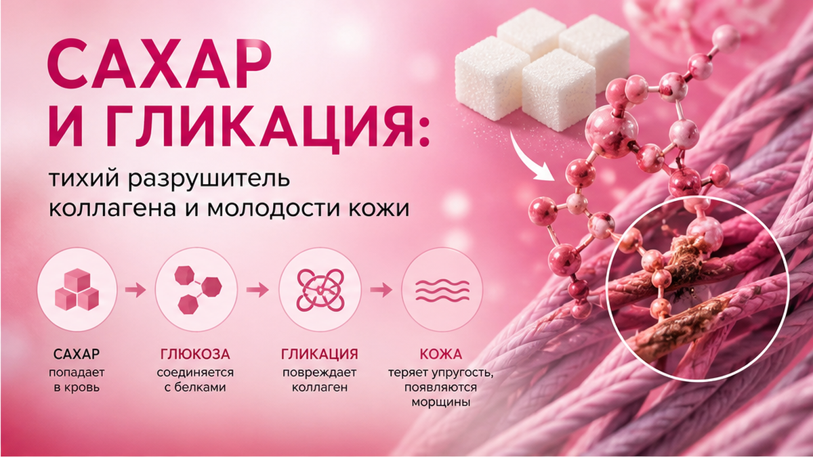
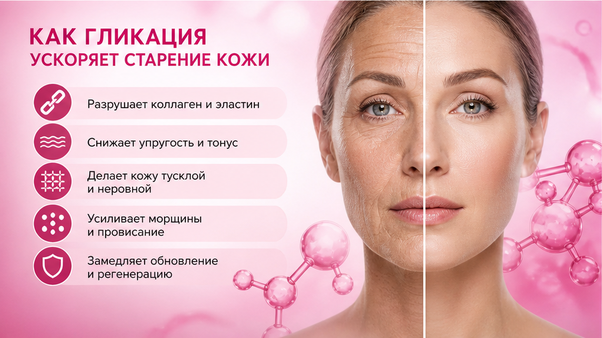
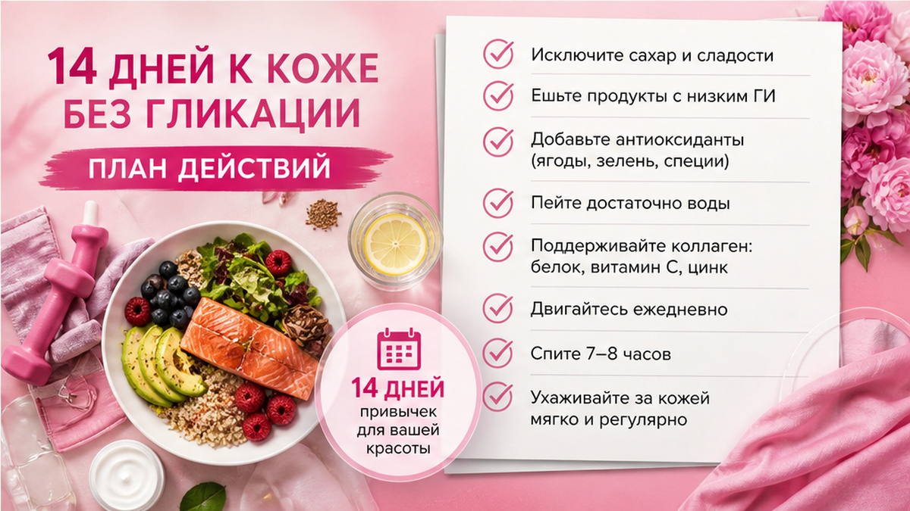

Сахар и кожа связаны не «наказанием за печеньку», а химией: гликирование — когда молекулы сахара прилипают к белкам, в том числе к коллагену. Лицо реагирует медленнее, чем весы, но стабильнее. Ниже — простыми словами про гликирование, что видно в зеркале, и мягкий план на 14 дней без срывов.
После «здорового» десерта щёки сияют, а через два дня — сухая сеточка и тусклый тон? Часто это не «аллергия на крем», а скачок сахара и нагрузка на коллаген.
Разберём, что такое гликирование, как сахар бьёт по коллагену, какие признаки на лице, чем заменить сладкое и дам протокол на 14 дней — для женщин 40+.
«Елена, я почти без сладкого. Почему морщины ползут быстрее подруги?»
Смотрю дневник — не «почти».
Кофе с сиропом.
Фруктовый сок «для витаминов».
Йогурт с вареньем.
И «без сахара» печенье с maltitol — сладость осталась, реакция тоже.
Кожа не считает ваши намерения.
Она считает глюкозу в крови.

Гликирование — это «карамелизация» белков внутри тела.
Молекула сахара цепляется к коллагену или эластину.
Белок становится жёстче и хуже пружинит.
На коже это не за один день.
Но при регулярных скачках — накопительно.
Механизм. После сладкого или быстрых углеводов глюкоза растёт. Избыток «пришивается» к белкам — получаются AGE (продукты гликирования). Коллаген теряет упругость, кожа хуже держит влагу.
❌ Мифы:
✅ Что важно понимать:
Если уход хаотичный — параллельно посмотрите типичные ошибки в уходе. Сахар и плохой барьер усиливают друг друга.
💡 Гликирование — не «грех». Это физика: сахар + белок = более хрупкая матрица кожи.

Коллаген — каркас.
Эластин — пружина.
Гликированный коллаген ломается быстрее, чем организм успевает его обновлять.
После 40 синтез и так медленнее — сладкое добавляет топливо.
Откуда нагрузка:
Снаружи кожа пытается удержать воду.
Изнутри матрица «дубеет».
Вы видите мелкую сетку, тусклость, медленнее заживление.
Сухость после сладкого часто маскируют кремом — и кажется, что «увлажнилась».
На деле барьер восстанавливается дольше — об этом в статье про вода, барьер и увлажнение.
Сделайте: смотрите на тарелку и напитки 7 дней, не только на витрину кондитерской. Не делайте: ждать, что коллаген в порошке компенсирует ежедневный сироп в кофе.
| Что едите | Что происходит | Что на лице |
|---|---|---|
| Сладкий кофе 2 раза в день | Регулярные скачки глюкозы | Тусклый тон, «усталость» к вечеру |
| Белый хлеб + джем | Быстрые углеводы | Сухость, мелкая сетка |
| Ночной десерт | Пик сахара + короткий сон | Отёк утром, морщины глубже |
| «Здоровый» смузи с бананом и мёдом | Много сахара в жидком виде | Жирный блеск + воспаления у чувствительных |

Не всегда прыщи.
Часто — «уставшее» лицо без причины.
Признаки, которые я вижу на консультациях:
Фото в одном свете раз в 5 дней — лучший детектор.
Не весы.
Не «я себя чувствую нормально».
Лицо в 18:00 в одном ракурсе.
Триггеры кожи — диагностика кожи поможет отделить сахар от ухода и стресса.
Сладкое редко бьёт одним молниеносным морщиной. Оно делает кожу менее эластичной — и любая привычка лица оставляет след быстрее.
Не «ноль сахара навсегда».
14 дней — чтобы увидеть, меняется ли текстура.
Миниплан.
Каждое утро: белок + жир в завтраке, без сладкого напитка.
Каждый день: один перекус с белком вместо печенья.
Каждый вечер: уход + 5 минут лимфы, без десерта «за сериал».
Если за две недели изменился только рацион, а сон и уход нет — эффект будет слабее.
Работает связка: меньше скачков + барьер + сон.
Не ждите «минус десять лет» за 14 дней.
Ждите: меньше отёка утром, ровнее тон, мягче текстура к вечеру.
Это реальный маркер отказа от сахара для кожи.
Чеклист на 14 дней.
Не менять: всю жизнь за один понедельник.
Добавить: белок в каждый приём пищи.
Убрать: один сладкий напиток — не все сразу.
Контроль: фото раз в 5 дней, один свет.
Резкий «ноль» часто заканчивается ночным тортом.
Мягче — заменить, не лишить.
Рабочие замены:
Не спасут кожу:
После 40 важнее стабильность, чем идеальность.
Одна порция десерта после обеда лучше, чем «ничего» днём и срыв в 23:00.
Про другие привычки, которые старят сильнее морщин, — сон и стресс часто тянут к сладкому. Лечите цепочку, не только витрину.
❌ Что не работает:
✅ Что помогает:
На консультациях вижу: «я на ПП, но лицо серое». Открываем приложение — 40 г сахара «скрытого» в соусах.
Убираем сироп и ночной йогурт — через 10 дней тон ровнее.
Не чудо.
Меньше гликирования.
Ещё ловушка — «фрукты безлимит».
Фрукт — не зло.
Но тарелка винограда вечером — тот же скачок, что конфета.
Работает связка, не запрет одного продукта.
Сахар и кожа — марафон. Лицо отвечает на стабильность, а не на героический понедельник.
Миниплан на вечер (5 минут).
Умылись мягко. Без «скрабов после сладкого» — барьер и так нагружен.
На влажную кожу — один слой ухода.
Три прохода лимфы: от центра лица к ушам, без давления.
Чай без сахара вместо «чего-нибудь сладенького» — если тянет по привычке.
Так тело и лицо заканчивают день без лишнего скачка.
И последнее: отказ от сахара для кожи — не про наказание.
Это про то, чтобы коллаген успевал обновляться, а не «карамелизоваться».
Дайте себе 14 дней честного эксперимента — и смотрите на лицо, не на идеальность рациона.
Через гликирование коллагена и скачки глюкозы. Кожа теряет упругость, хуже держит влагу, тон тускнеет. Эффект накопительный при регулярных сладких перекусах и напитках.
Молекулы сахара связываются с белками коллагена. Белок становится жёстче и ломается быстрее. Это один из механизмов «сахарного» старения кожи.
Чтобы увидеть первые изменения — часто да: меньше отёка, ровнее тон, мягче текстура. Глубокие морщины за две недели не исчезнут — нужна стабильность месяцами.
Не «вред», а нагрузка. Мёд — сахар. Фрукты в разумной порции после еды — ок. Литры сока и мёд каждый вечер — та же история, что конфеты.
Может поддержать общий фон, но не отменяет ежедневные скачки глюкозы. Сначала стабилизируйте сладкое и уход — потом добавки по желанию с врачом.
Скачок инсулина и задержка воды, плюс часто сладкое едят вечером. Утром — одутловатость и «уставший» вид.
Да. Лучше после основного приёма пищи, не натощак, не каждый день. Кожа реагирует на частоту, не на одну праздничную порцию.
Корица, ваниль, постепенное снижение. Или кофе после завтрака с белком — тяга к сладкому ниже.
Косвенно: гликирование + воспаление + плохой сон после сладкого. Мимические морщины заметнее на менее эластичной коже.
Не обязательно. Для кожи важнее убрать ежедневные скрытые источники: напитки, соусы, перекусы. Остальное — по самочувствию.
Постоянная жажда, резкое похудение, сыпь, подозрение на диабет — не экспериментируйте с диетой сами.
Достоверность: материал основан на практике Елены Шимановской и общеизвестных данных о гликировании белков. Не медицинская рекомендация. При диабете, гормональных заболеваниях — эндокринолог.
🔥 Мой Telegram-канал «Silver Cream»
❓ Сладкое у вас — каждый день или «по праздникам»? Что заметили на лице после отказа от сахара? Напишите в комментариях ⤵️